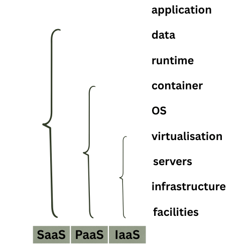

Here is some general information relevant to DevOps and cloud computing.
Cloud computing
NIST defines 5 characteristics of cloud computing:
- on-demand self-service
- broad network access
- resource pooling
- rapid elasticity
- measured service
Cloud computing services:

DevOps principals
- Collaboration
- Communication
- Transparency
Continuous integration
When developers regularly merge their code changes into a central repository, after which automated builds and tests run.
Continuous delivery
When code changes are automatically built, tested and prepared for a release to production.
Infrastructure as code (IaC)
When infrastructure is provisioned and managed using code and software development techniques such as version control and continuous integration.
Monitoring and logging
Enabled organisations to see how applications and infrastructure performance impact the experience of the end user.
Deployment strategies
Defines how software is delivered.
In-place deployment
- The previous version of software is stopped, the latest version is installed and the new version of the application is started
- New infrastructure does not have to be created
- Service outage is assumed
Blue/green deployment
- A technique for releasing an application by shifting traffic between 2 identical environments running differing versions of an application
- Enables launching a new version (green) of an application alongside an old version (blue) to monitor and test before traffic is re-routed
- minimises downtime and allows rollback
Canary deployment
Incrementally deploying a new version in a slow fashion until eventually replacing the old with the new version entirely.
Linear deployment
Traffic is shifted in equal increments in a way where you can specify the percentage of traffic to be shifted every number of minutes.
All-at-once deployment
All traffic is shifted from original environmnet to the new one all at once.
Forward and reverse proxy
Forward proxy
A server that sits infront of the client machine and intercepts requests to the internet and communicates on behalf of the clients as a middleman.
Example usage includes: blocking access to certain content, protecting online identity by using the proxy's IP address.
Reverse proxy
A server that sits infront of the web servers intercepting requests from clients such that the client does not communicate directly with the origin server.
Benefits include load balancing, protection from attacks, caching, SSL encryption.
DNS
A DNS zone is a database containing records. A nameserver (NS) is a DNS server that hosts 1 or more zones. (More on that in the Route53 tab).
DNS query flow:
- A user requests a domain eg. www.netflix.com
- DNS is used to locate the authoritative zone which hosts the record(s), to obtain the IP address of this domain
- First the local cache and host file is checked
- Next a DNS resolver is used, usually provided by the ISP (Internet Service Provider)
- The resolver checks its cache and if needed, queries the root zone via 1 of the root servers. The IP of this server is maintained in the browser
- The root server will return details of the
.comnameservers - The resolver then queries the netflix.com DNS nameservers
- They will return an authoritative response
- This might just give a CNAME instead of an IP, in which case another query is needed
Cross-Origin Resource Sharing (CORS)
Origin is the site you visit.
Same-origin requests are always allowed, eg. when the browser calls a domain which defines origin.
Cross-origin requests are made to different domains than the origin i.e. when the AWS API is called to retrieve an image from another bucket. These requests are always restricted but are controlled by CORS. CORS are defined on the origin and provide directives to allow the cross-origin requests.
CORS configuration can be defined on S3 buckets using JSON. CORS configuration is processed in order.
Request types
There are 2 types of requests to a resource that could require a CORS configuration.
-
Simple requests: works as long as the other origin is configured to allow requests from the original origin.
-
Preflight and Preflighted requests: when the browser sends a HTTP request to the other origin to determine if the request you are making is safe to send.
CORS configuration
Some relevant configuration that the other origin sends to the web browser:
Access-Control-Allow-Origincan be*or a particular origin allowed to make requestsAccess-Control-Max-Ageindicates how long results of a preflight request can be cachedAccess-Control-Allow-Methodsdefines methods that could be used for cross-origin requestsAccess-Control-Allow-Headerscan be contained in the CORS configuration and in the response to a preflight request and indicates which HTTP headers can be used with the request